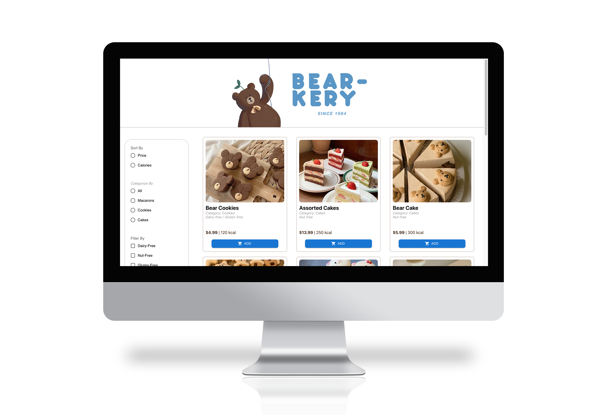

To familiarize myself with React and internal states, I created
a web application modeling a bakery shop ordering page that has
the capability of sorting items by feature, filtering items by
category, as well as displaying a responsive cart that calculates
the total price of the order. I made use of React states and
components to achieve this, which allowed the web app to respond
efficiently to user input and interactions.
state
In React, properties are preserved through states and can be
manipulated through setter objects. State maintains the status
of the bakery cart until an add/subtract button is pressed,
which appropriately increments or decrements the bakery cart
count according the state it was previously in.
components
Components allow the programmer to render several identical
objects by passing in a set of data and allocating them to
various design elements. Rather than hard-coding each bakery
item to display, I rendered each element of a dataset of bakery
items to its own card by passing in data. As a result, I
could quickly edit the bakery items by editing the dataset
itself rather than HTML or CSS.
sort/filter
The sort/filter functions on datasets are adapted from
Javascript. This allows the user to both sort by a feature
that each bakery item possesses, as well as filter by categories
(dietary restrictions, allergies) that only certain items are part of.
mapping
In the last step, I was able to “render”, or display the Bearkery
ordering page by mapping each component and any associated
datasets to the Document Object Model (DOM), which allows
the website to come to life.

This project was worthwhile in that it allowed me to explore
React and its capabilities. I learned the usefulness of state
in React, as well as the efficiency provided by rendering
components rather than individual items. I can now use these
tools to create responsive websites to user data and input.